Локальный стритфуд · Кемерово · август 2026
Как превратить 13 начинок в контент-систему для локальной чебуречной
Для ЧЕБУССЭР собрали не просто аппетитную ленту, а путь к первому заказу: показали ассортимент, объяснили продукт, сняли сомнения, вовлекли в выбор и добавили понятные предложения.
Контент-план и тексты утверждены. Финальный визуал подготовлен и передан клиенту.
Финальный визуал передан клиенту. Условия внутри отдельных макетов относятся к периоду проекта.


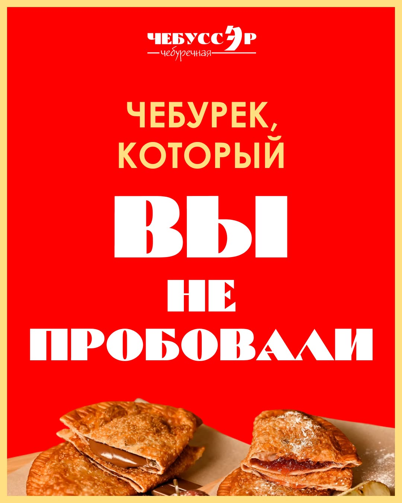
Задача контент-системы
Показать ассортимент, снять сомнения и довести до первого заказа
Профилю не хватало регулярной профессиональной подачи. Контент должен был сделать продукт понятным, разнообразие — удобным для выбора, а обращение — естественным следующим шагом.
Что важно было донести
- в меню 13 начинок, и для каждой ситуации можно найти свой вариант;
- чебуреки готовят после заказа, а не держат заранее;
- продукт можно показать не только рекламой, но и полезным контентом;
- голосования помогают бренду вести диалог с локальной аудиторией;
- после прогрева человеку понятен следующий шаг к заказу.
Как построили разговор
Чередовали продуктовые витрины, полезные материалы, вопросы аудитории, работу с мифами и предложения. Поэтому лента не выглядит как десять одинаковых рекламных объявлений.
Главная логика: желание попробовать → польза → доверие → участие → первый заказ.
Витрина
Показать разнообразие начинок и вызвать желание попробовать.
Вовлечение
Спросить о любимом варианте и идеях для меню.
Польза
Дать сохраняемый совет и помочь выбрать необычную начинку.
Мифы
Объяснить свежесть, вес и отношение к стритфуду.
Предложение
Подвести прогретого читателя к первому заказу.
Готовый продукт целиком
Переключайте формат и рассматривайте все 27 изображений
План показывает роль каждой темы. В ленте — восемь одиночных постов и две обложки. Обе карусели и весь мини-прогрев можно пролистать отдельно.
10 связанных тем
От выбора начинки к понятному предложению
Точные даты выхода не зафиксированы, поэтому показываем маркетинговую последовательность без выдуманного календаря.
- 13 начинок. Любимая — одна?Витрина и вовлечение · пост
- Наш хит: чебурек с говядинойВитрина продукта · пост
- Как съесть чебурек и не испачкатьсяПольза и сохранения · карусель
- Жарим только после заказаСнятие сомнения о свежести · пост
- Первый заказПредложение периода проекта · пост
- Чебурек, который вы не пробовалиВыбор необычной начинки · карусель
- Что добавить в меню?Голосование и обратная связь · пост
- Как применить промокодУпрощение первого действия · пост
- 190 граммов — перекус?Разбор мифов о продукте · пост
- Подарок к первому заказуПредложение периода проекта · пост
Лента из 10 публикаций
Единая красно-жёлтая система без визуальной монотонности
Нажмите на любой макет, чтобы открыть его без обрезки. Для каруселей здесь показаны обложки; все слайды находятся в соседней вкладке.
2 карусели · 14 слайдов
Одна помогает, другая раскрывает ассортимент
Первая карусель даёт короткую инструкцию. Вторая превращает необычные начинки в понятный выбор. Листайте стрелками или выбирайте слайд снизу.
Публикация 03 · 7 слайдов
Как съесть чебурек и не испачкаться
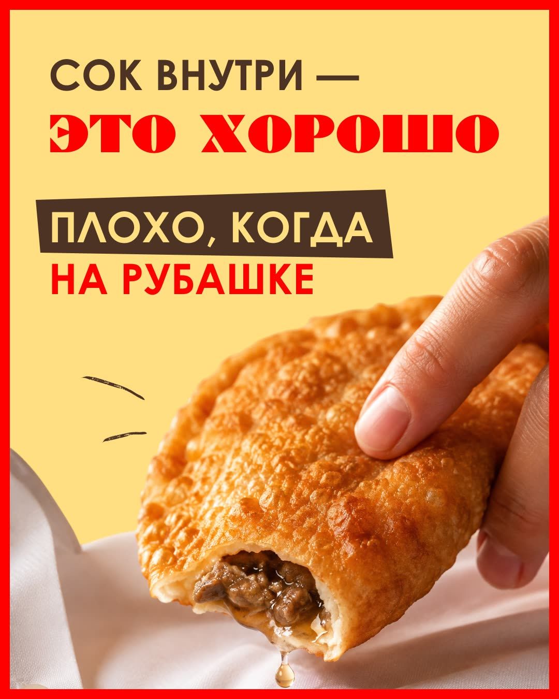
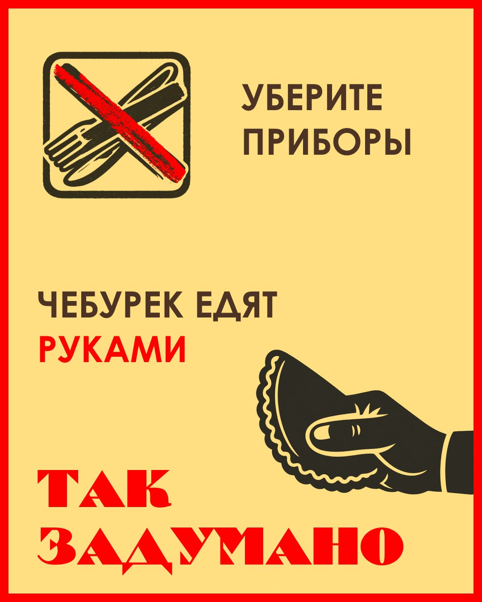
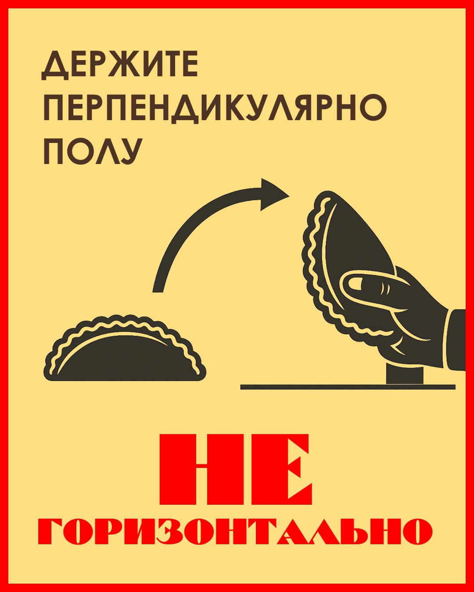
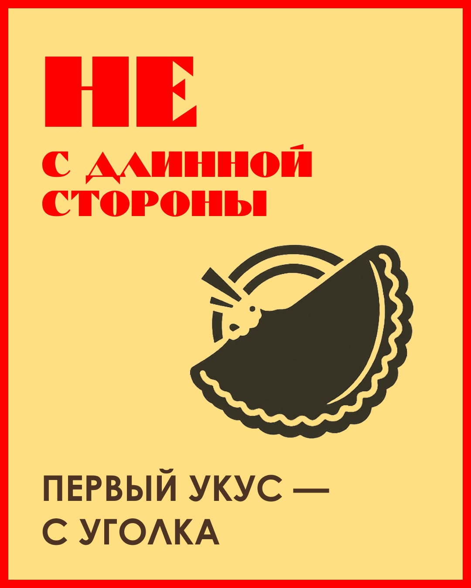
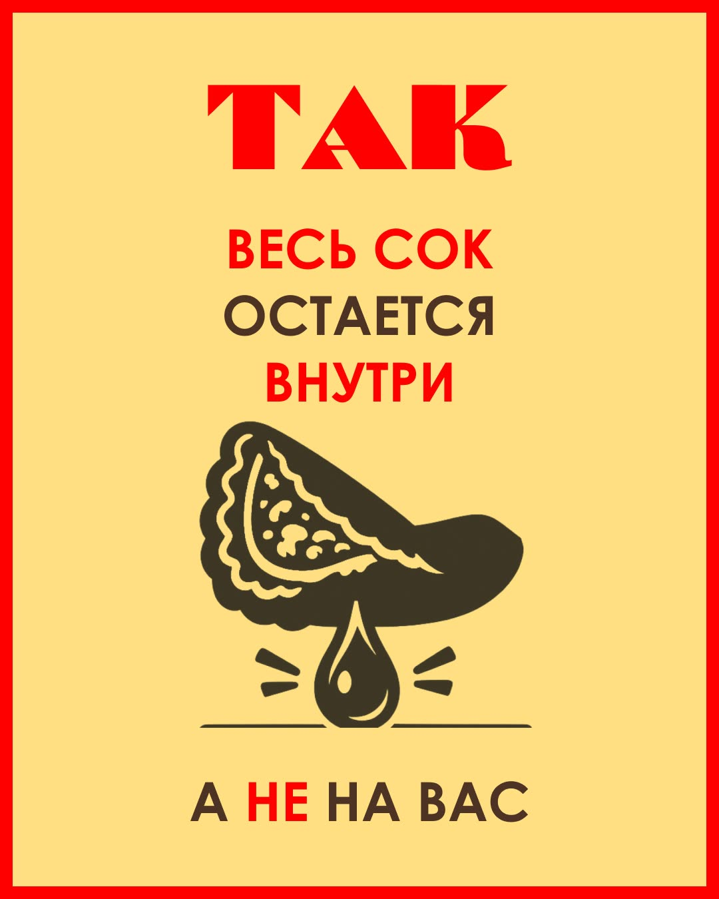
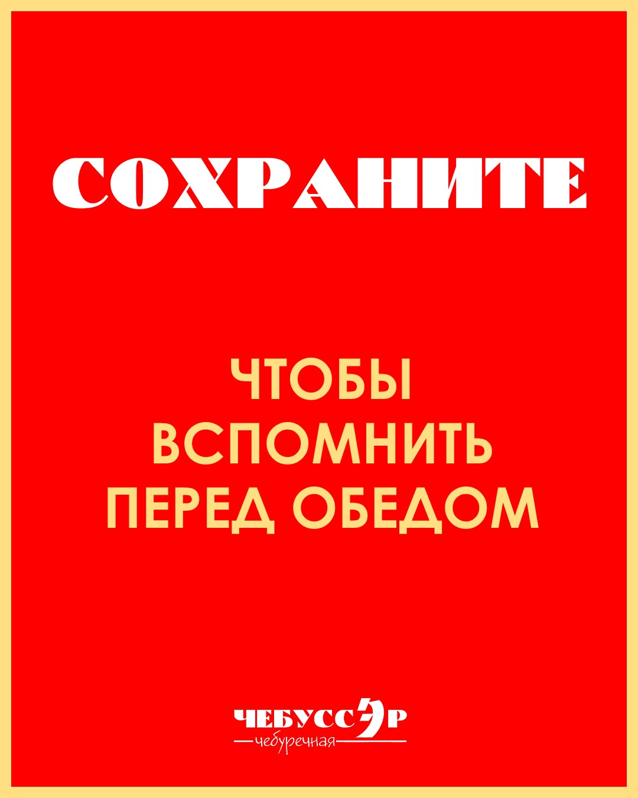
1 / 7
Публикация 06 · 7 слайдов
Чебурек, который вы не пробовали
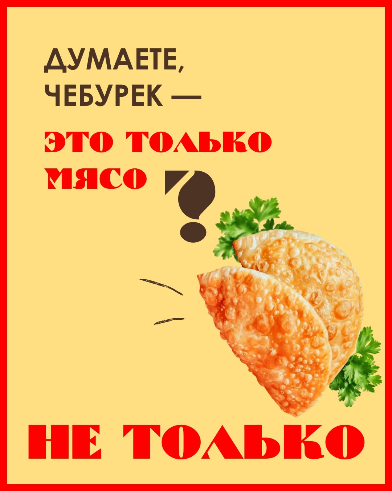
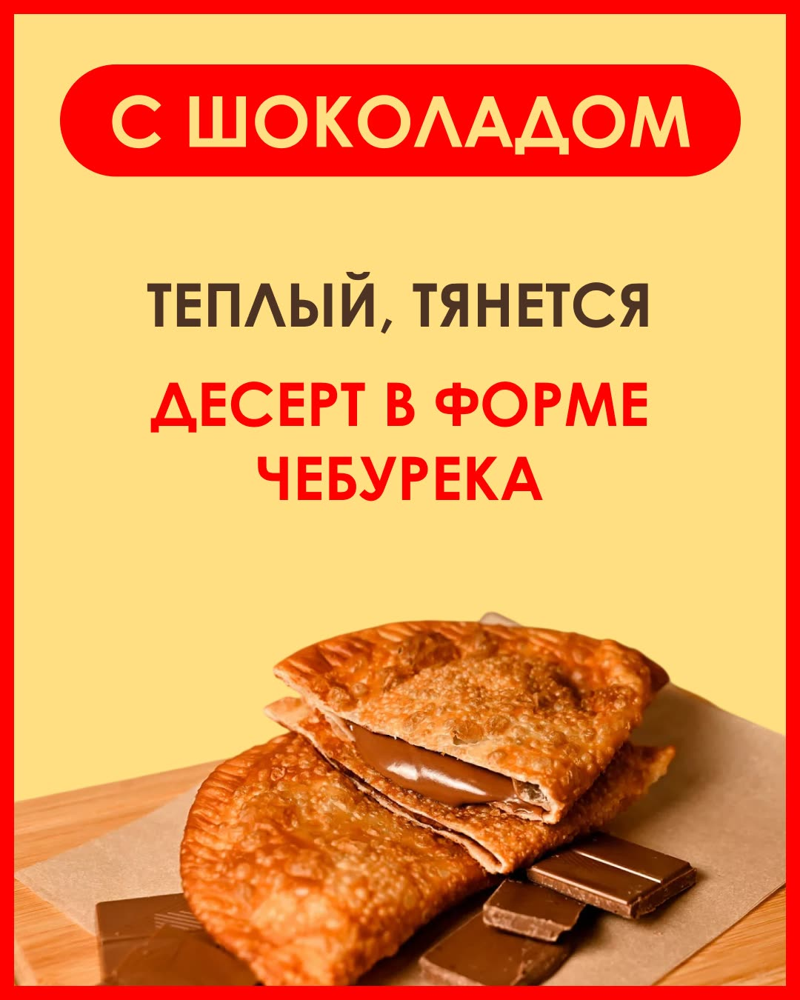
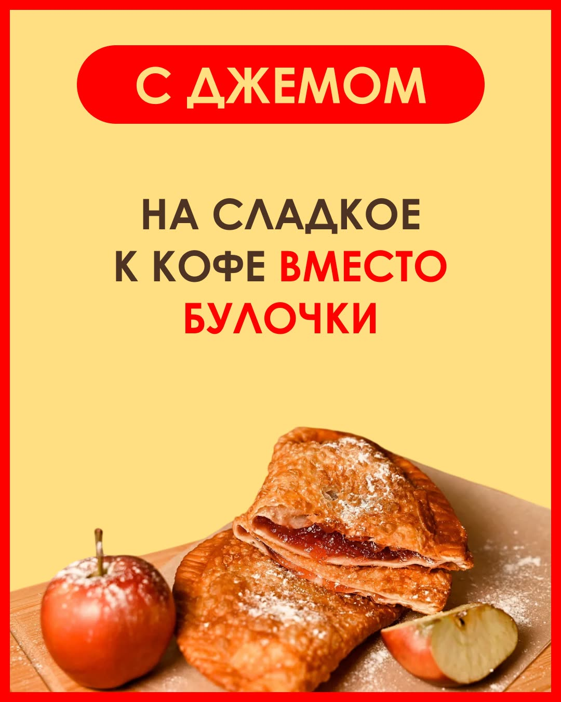
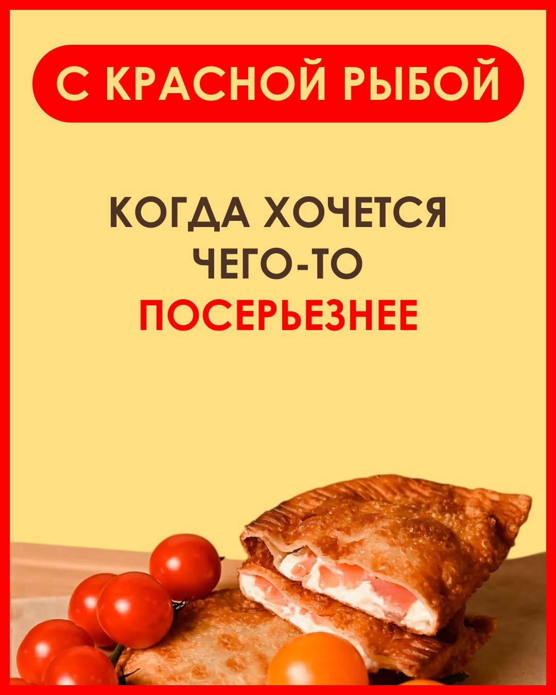
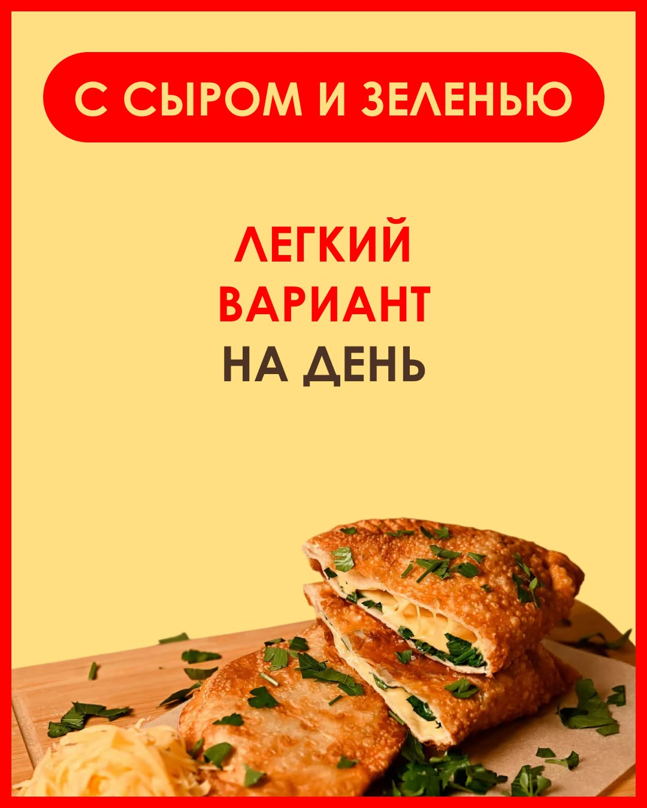
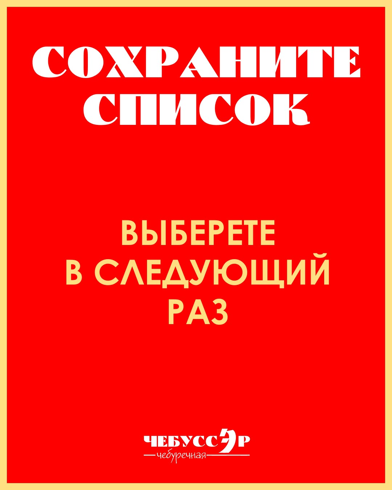
1 / 7
Один мини-прогрев · 5 экранов
От выбора среди 13 начинок к хиту меню
Истории последовательно сужают выбор: сначала показывают разнообразие, затем предлагают начать знакомство с популярного чебурека с говядиной.
Результат проекта
Готовый результат проекта
На странице видны объём, маркетинговая логика и качество готового комплекта.
Что сделали
- контент-план и тексты утверждены;
- 8 одиночных постов и 2 карусели по 7 слайдов;
- мини-прогрев из 5 статичных сторис;
- 27 финальных изображений в форматах 4:5 и 9:16;
- финальная подготовка визуала и передача клиенту.
Итог проекта
Финальный визуал передан клиенту. Публикация и коммерческие показатели в проекте не измерялись.
Скидки, подарки и механика промокода внутри макетов относятся к августу 2026 года и не являются текущими условиями.
Нужна своя контент-система?
10 публикаций, две карусели и мини-прогрев — в одном управляемом комплекте
Команда собирает маркетинговый план, пишет тексты и делает дизайн. Вы получаете готовый контент, а не список идей для самостоятельной доработки.